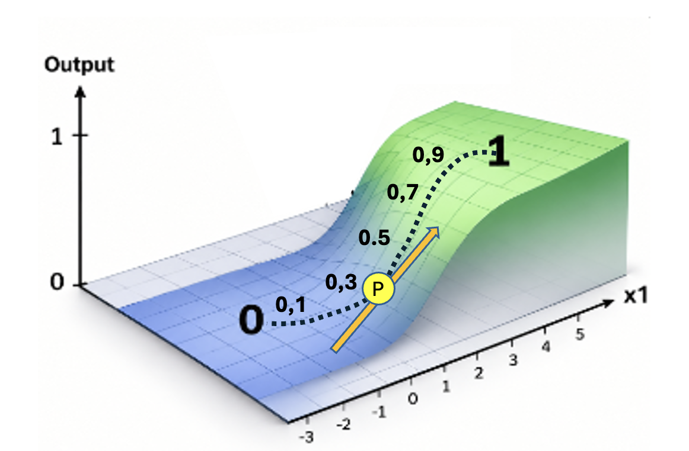
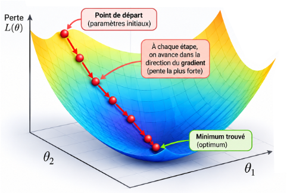
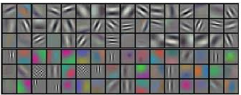
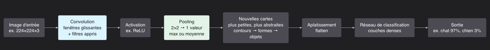
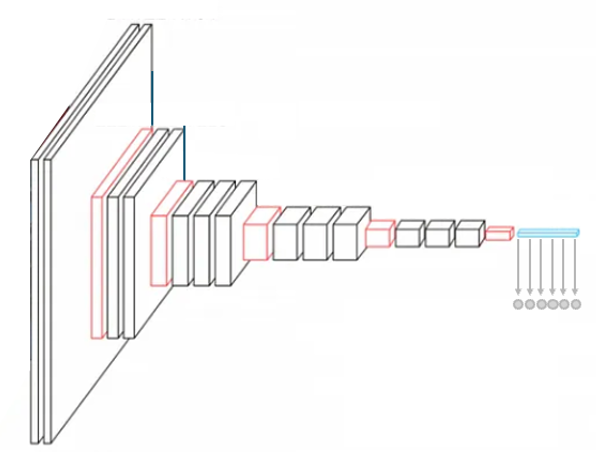

L'apprentissage
Comment les poids se fixent
Les fonctions d'activation dérivables
Une fonction d'activation continue et dérivable,
bornée entre 0 et 1, permet de mesurer l’erreur.
La position de la prédiction P et l’inclinaison de la
tangente à ce point de la courbe donnent la direction à
suivre.

La surface de prédiction avec une fonction d'activation sigmoïde.
L'apprentissage
Réduire l’erreur consiste à descendre une montagne par temps de brouillard
Dans le brouillard, on ignore où l’on se trouve.
On peut cependant sentir sous ses pieds l’inclinaison de la pente.
On choisit alors de descendre — tant que c’est possible.
La descente de gradient
La montagne des erreurs a son relief : chaque position
(valeur des poids) a une altitude (une valeur d’erreur).
Cette description du relief a un nom :
la fonction de coût. On ne
connaît ni son maximum ni son minimum.
À chaque nouvelle position (changement des poids), on peut
mesurer la pente de l’erreur finale, son
gradient.
On fait alors le choix rationnel d’un petit pas dans la
direction où cette erreur diminue et on recommence tant
qu’on peut :
C’est la descente de gradient.

Paysage d’erreur en 3D
Les axes θ₁ et θ₂ représentent deux poids du réseau à ajuster, et L(θ) la fonction de coût (Perte).
La descente de gradient suit la pente pour trouver le minimum.
On ne peut pas savoir si on est loin du fond de la vallée,
ni même s’il existe une seule vallée plutôt que plusieurs.
Le relief peut tromper : si on a atteint une cuvette au lieu
de la vallée, l’erreur restera grande.
L’apprentissage n’est jamais garanti, et de surcroît,
il n’est pas déterministe : en raison
de l’initialisation aléatoire des poids et de l’ordre de
traitement des exemples, deux entraînements successifs sur
les mêmes données produisent des modèles
légèrement différents.
Il faut donc des validations postérieures à l’entraînement.
La rétropropagation
Le génie des années 1980, c’est la rétropropagation : on a réussi à démontrer qu’en empilant des fonctions dérivables en couches, on peut remonter l’erreur de la sortie jusqu’aux premières couches, et donc entraîner des couches cachées.
Principes
Pour chaque neurone de sortie, on mesure l’erreur, son
ampleur et la direction à suivre pour la diminuer.
Cette erreur est ensuite renvoyée aux neurones de la couche cachée
précédente en proportion de leur influence.
Chaque neurone caché connaît ainsi la direction à suivre et
applique un petit pas de correction, proportionnel au
gradient reçu.
Ce que les couches cachées finissent par détecter
Comme plusieurs sorties peuvent exiger d’une même couche
cachée des ajustements contradictoires, les demandes
s’additionnent.
La couche de neurones cachés fabrique alors des
compromis, qui révèlent ce que les sorties ont en commun.
Dans l’analyse de texte, on observe une progression : les premières couches repèrent des suites de lettres et de mots, les suivantes des tournures récurrentes liées à la grammaire, et les autres le sens des expressions et des intentions.
La convolution pour la reconnaissance d'images
Une image peut contenir une quantité colossale de pixels,
ce qui rend impossible l’utilisation de chaque pixel individuellement
comme entrée dans un réseau de classification.
L’opération de convolution consiste à faire
glisser une petite fenêtre (par exemple, 3 × 3 pixels) sur
toute l’image : à chaque position, les valeurs de la fenêtre
sont combinées avec un filtre (un tableau de coefficients)
pour produire une nouvelle valeur.
Chaque filtre étant différent, il produit ainsi une
nouvelle image, appelée carte de caractéristiques
(ou feature map en anglais) : on obtient donc autant de
cartes que de filtres.

Cartes de caractéristiques, première étape
Des convolutions successives, suivies de fonctions d’activation (comme ReLU), font émerger automatiquement les caractéristiques utiles pour la classification, organisées selon une hiérarchie :
- Couche 1 : détecte des contours et des couleurs
- Couche 2 : détecte des textures et des formes simples
- Couche 3 : détecte par exemple des yeux ou des roues
- Couche 4 : détecte des visages ou des voitures
Un flux de convolution

Un filtre (souvent carré, ex. : 3 × 3) balaye l’image d’entrée comme une fenêtre glissante pour extraire des motifs locaux.
Une phase de pooling réduit ensuite chaque carte en
remplaçant un carré de pixels (par exemple, 2 × 2) par
une seule valeur (moyenne ou maximum).
Cette étape diminue la taille des images tout en conservant
l’information essentielle.
En empilant plusieurs couches (convolution → activation → pooling), on réduit
progressivement le nombre de valeurs, tout en extrayant des
caractéristiques de plus en plus abstraites (par exemple, des contours en entrée, puis des textures, puis des objets).

La dernière carte est finalement « aplatie » en un vecteur d’entrée et envoyée à un réseau de classification classique.
Les réseaux en couches font émerger des aptitudes
Aucune de ces aptitudes n’a été programmée : elles
émergent de la masse.
Par des compromis successifs, chaque couche apprend ce qui
est commun aux demandes de la suivante.
Exemple d’apprentissage d’un réseau à couche cachée
Exemple de topologie : un MLP (Multi Layer Perceptron)
-
Couches de neurones
- Couche d’entrée : 2 neurones (x, y), correspondant à un clic sur un écran 200 × 400 (soit 80 000 positions possibles)
- Couche cachée : 12 neurones
- Couche de sortie : 3 neurones, pour distinguer trois catégories de feux (vert, orange, rouge)
-
Fonctions d’activation
-
Couche cachée :
ReLU (Rectified Linear Unit)
Cette fonction évite notamment le problème du gradient évanescent (qui fait « piétiner » l’algorithme sur des zones plates) et permet un apprentissage plus rapide.
-
Couche de sortie :
Sigmoïde
Produit des valeurs comprises entre 0 et 1 pour chacune des sorties. Si la sortie dépasse 0,5, le feu correspondant s’allume.
-
Couche cachée :
ReLU (Rectified Linear Unit)

Ce modèle comprend 75 paramètres
Du côté de la couche de sortie, on trouve : 3 × (12 poids + 1 biais), soit 39 paramètres.
Pourquoi 12 neurones ?
Au départ, on ignore combien de neurones sont nécessaires.
On teste donc différentes architectures et on évalue les
résultats obtenus sur le jeu de test pour choisir la meilleure configuration.
8 neurones cachés : 93,25 % de précision
10 neurones cachés : 96,75 % de précision
12 neurones cachés : 97,00 % de précision
16 neurones cachés : 94,75 % de précision
On remarque que plus de neurones ne garantissent pas toujours de meilleurs résultats.
L’apprentissage supervisé
L’apprentissage supervisé consiste à fournir au réseau un jeu de données, composé de couples « entrée ; sortie » à apprendre.
Un jeu de données à créer
Prenons l’exemple d’un clic sur un écran 200 × 400 contenant des cercles différents.
On ne peut pas fournir les 80 000 positions possibles, chacune devant être associée au résultat attendu.
On peut appliquer une règle empirique : utiliser 10 à 100 fois plus de données que de paramètres.
Avec 75 paramètres, en retenant un facteur de 16, il faut donc environ 1 200 exemples dans le jeu d’entraînement.
Entraînement vs Validation
Il faut diviser le jeu de données en deux lots : entraînement (80 %) et validation (20 %).
Le réseau est entraîné avec le premier lot (1 200 exemples), ce qui permet d’obtenir un modèle (un tableau de paramètres).
On évalue ensuite le modèle avec le second lot (240 exemples) pour vérifier s’il prédit correctement.
Taux de précision
Un entraînement est jugé réussi si son taux de précision dépasse le seuil requis pour son domaine.
| Domaine | Seuil typique | Exemple |
|---|---|---|
| Projet pédagogique | 90-95 % | Acceptable pour l’apprentissage |
| Recommandation de produits | 85-90 % | Les erreurs sont tolérées |
| Reconnaissance faciale | 99,9 % | Faux positifs inacceptables |
| Diagnostic médical | 99,99 % | Une erreur peut coûter une vie |
| Conduite autonome | 99,999 % | Tolérance quasi nulle |
Apprentissage par époques
Une époque correspond au passage complet de tous les exemples
du jeu d’entraînement.
À la fin de chaque époque, on mesure la précision et on stoppe
l’entraînement si celle-ci plafonne.
Époque 0 : Perte = 1,8974, Précision = 23,88 %
Époque 200 : Perte = 0,5561, Précision = 87,38 %
Époque 400 : Perte = 0,3315, Précision = 92,13 %
Époque 600 : Perte = 0,2496, Précision = 94,13 %
Époque 800 : Perte = 0,2168, Précision = 95,50 %
Époque 1000 : Perte = 0,1999, Précision = 95,38 %
Époque 1200 : Perte = 0,1895, Précision = 95,50 %
Époque 1400 : Perte = 0,1834, Précision = 95,38 %
Époque 1600 : Perte = 0,1785, Précision = 95,50 %
Époque 1800 : Perte = 0,1711, Précision = 95,75 %
Temps d’entraînement : 1,00 s
Précision sur le jeu de test : 232/240 (97,00 %)
Prise de conscience de l’impact énergétique
Rien que pour ce petit réseau de 12 neurones :
- Pour 1 test (x₁, x₂) : 60 multiplications et 63 additions sont nécessaires pour calculer un score.
- Pour une époque (1 200 tests) : 72 000 multiplications et 75 800 additions, soit 147 600 opérations arithmétiques.
- Pour les 1 800 époques d’un seul apprentissage, dans cet exemple : plus de 265 millions d’opérations arithmétiques !
Les LLM modernes, eux, exigent des centres de données géants pour leurs milliards de paramètres.
Pratiquer
Entraînez un réseau pour qu’il apprenne à piloter les
feux lorsqu’on clique sur leurs images sur une tablette.
Le code de cet apprentissage tournera dans votre navigateur.
Pas besoin de centre de données pour apprendre à entraîner un réseau.
Uniquement pour ceux qui souhaitent approfondir les concepts fondamentaux des réseaux de neurones.
Voir la description complète et détaillée du projet